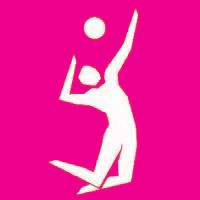
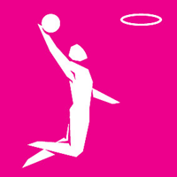
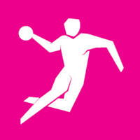

Egy lépésnyire vagyunk az edzéseink elkezdésétől! Az eggyetlen teendő ami hátra maradt, hogy egy sportot válasszunk. Az alábbi ablakokra víve a kurzorunkat észrevehetjük, hogy más-más színűek az ablakok szélei. Ez annak a függvényében változik, hogy az ezelötti felmérés alapján milyen fizikai kondícióval rendelkezünk. A nekünk ajánlott sportot a SÁRGA szín fogja jelölni. Minden sport, ami ennél könnyebbnek bizonyul zöld színnel lessz jelölve, és minden ami ennél nehezebb piros lessz. Amennyiben egy nehezebb sportra vállalkozunk, mint az ajánlott, tudatában kell legyünk, hogy a napi programokon kívül még fog kelleni dolgoznunk a fizikai kondíciónkon annak érdekében, hogy tudjuk tartani a lépést az edzésekkel.
Röplabda

A röplabda azon csapatsportok közé tartozik ahol a fizikai kondíció nem akkora befolyásoló tényező, mint a csapaton belüli kommunikáció, vagy az egymásba fektetett bizalom. Ha a fizikai kondíciód nem bírja a hosszutávú megterhelést, de szereted a csapatsportokat, vagy ha egyszerüen szeretnél szórakozni néhány barátoddal, a röplabda csapat a neked való hely!
Kosárlabda

A kosárlabda egy olyan sport ahol az egyén legalább annyira befolyásolható lehet, mint egy egész csapat. A játék gyakorlati elemeinek teljeskörű elsajátítása nehéznek bizonyulhat, azonban amikor ezek már megvannak esélj adatik minden játékosnak, hogy megmutassa, hogy mire képes. Ha szereted villogtatni az ügyességed a barátaid előtt, de jól tudsz csapatban is dolgozni, és fizikai kondíciód jó állapotban van, akkor vár a kosárlabda csapat!
Kézilabda

Amennyiben szereted az akciódús csapatjátékot, ahol a fizikai erő és kézügyesség érvényesül mindenek felett, és nem bánod a meccsek folyamán megszerzett néhány karcolást, a kézilabda csapatban a helyed!
FIGYELEM!
A kézilabdában gyakori a durva fizikai kontaktus, amely a játékidő folyamán is szabályos, így állandóan fent áll a megsebesülés lehetősége, amelyre saját felelőségünkön vállalkozunk.